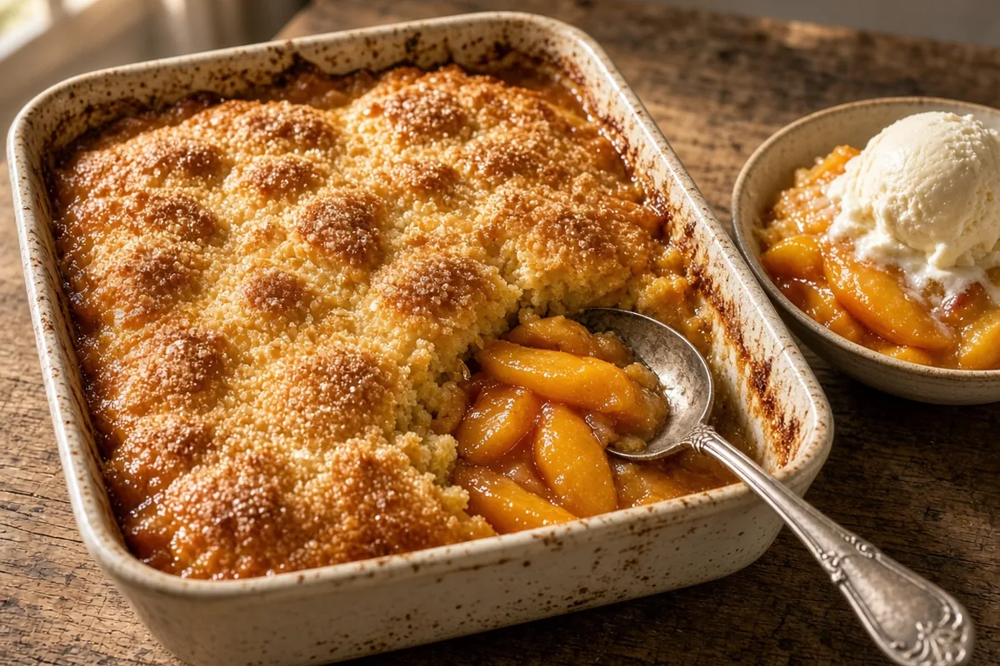

Southern Peach Cobbler (from a #10 can)
A Southern batter cobbler that uses a whole #10 can of sliced peaches. The batter rises up around the fruit into a buttery, golden crust.

12 servings
By
Yield: 12 servings
Prep:
Cook:
Rest: 20 to 30 minutes (not counted in the total)
Total:
Difficulty: Easy
Ingredients
- 1 can (6 lb) sliced peaches in syrup, about 7 to 8 cups drained, with 1/2 cup syrup reserved
- 12 tablespoons (1 1/2 sticks) salted butter
- 1 1/2 cups all-purpose flour
- 1 cup granulated sugar (use 1 1/4 cups if the peaches are in light syrup or juice)
- 1 tablespoon baking powder
- 1/2 teaspoon salt
- 1 1/2 cups whole milk
- 2 teaspoons vanilla extract
- 1/4 cup brown sugar
- 1 1/2 teaspoons ground cinnamon
- 1/4 teaspoon ground nutmeg
- 1 tablespoon lemon juice
- 2 tablespoons turbinado sugar, optional, for the top
Instructions
- Heat the oven to 350°F. Set a 9x13-inch baking dish that is at least 2 inches deep on a rimmed sheet pan. Add the salted butter to the dish and melt it in the oven, 5 to 8 minutes.
- Meanwhile, drain the peaches well, saving 1/2 cup of the syrup. In a bowl, toss the peaches with the brown sugar, cinnamon, nutmeg, lemon juice, and the saved syrup, 3 minutes.
- In another bowl, whisk the flour, granulated sugar, baking powder, and salt. Stir in the milk and vanilla until just smooth, 2 minutes.
- Pour the batter evenly over the melted butter, and do not stir. Spoon the peaches and their juice evenly over the top, and do not stir again. Sprinkle the turbinado sugar on top if you are using it, 3 minutes.
- Bake at 350°F for 50 to 60 minutes, checking at 50 minutes, until the top is deep golden, the edges are bubbling, and a toothpick in a batter spot between the peaches comes out clean. If the top browns before the center sets, lay foil loosely over it. If the toothpick still has wet batter after 60 minutes, bake 5 to 10 minutes more.
- Rest 20 to 30 minutes so the juices thicken. Serve warm with vanilla ice cream or lightly sweetened whipped cream.
Notes: Drain the peaches well; too much syrup makes the cobbler gummy, and the 1/2 cup you add back is enough. Leftovers keep covered in the fridge for 4 days. Reheat at 325°F for about 15 minutes.